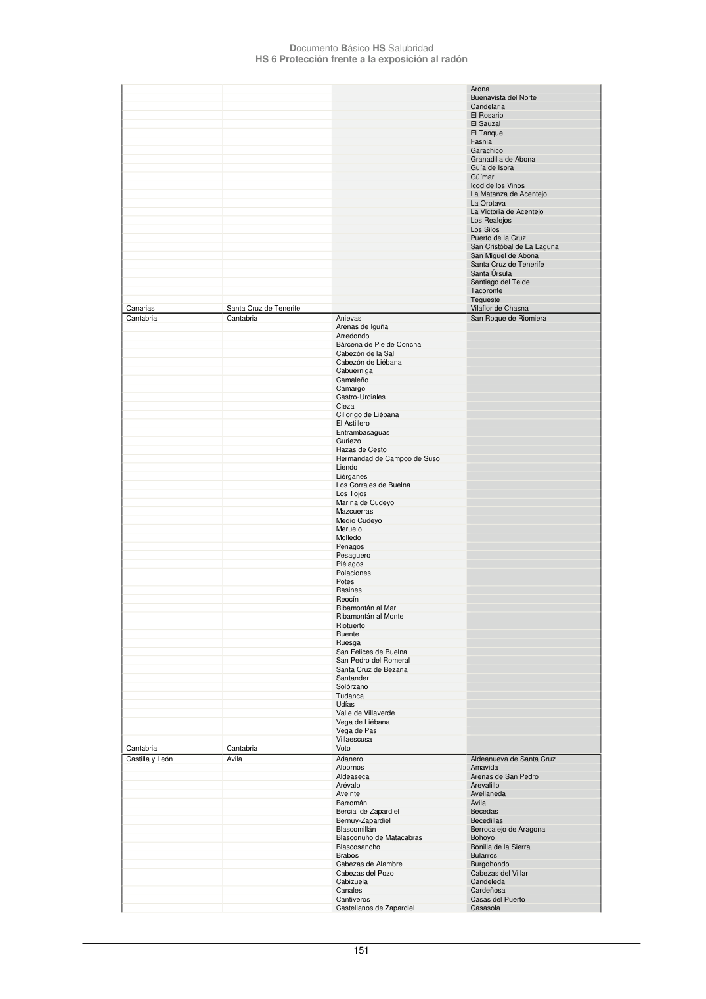

DB-HS Salubridad · edición 2022-06-14 · capa oficial
Documento DB-HS-oficial · SHA-256 del PDF 68df3caacc95f71aee2ec1ba7b2c65ae66155c21e3a8785521b8fdd4fd640d3b
Página física 151 de 184.
Copia fiel del PDF fuente · Fuente oficial
Ficha de la disposición en la fuente oficial
Formato: Texto de la página (Markdown)
Documento Básico HS Salubridad HS 6 Protección frente a la exposición al radón 151 Arona Buenavista del Norte Candelaria El Rosario El Sauzal El Tanque Fasnia Garachico Granadilla de Abona Guía de Isora Güímar Icod de los Vinos La Matanza de Acentejo La Orotava La Victoria de Acentejo Los Realejos Los Silos Puerto de la Cruz San Cristóbal de La Laguna San Miguel de Abona Santa Cruz de Tenerife Santa Úrsula Santiago del Teide Tacoronte Tegueste Canarias Santa Cruz de Tenerife Vilaflor de Chasna Cantabria Cantabria Anievas San Roque de Riomiera Arenas de Iguña Arredondo Bárcena de Pie de Concha Cabezón de la Sal Cabezón de Liébana Cabuérniga Camaleño Camargo Castro-Urdiales Cieza Cillorigo de Liébana El Astillero Entrambasaguas Guriezo Hazas de Cesto Hermandad de Campoo de Suso Liendo Liérganes Los Corrales de Buelna Los Tojos Marina de Cudeyo Mazcuerras Medio Cudeyo Meruelo Molledo Penagos Pesaguero Piélagos Polaciones Potes Rasines Reocín Ribamontán al Mar Ribamontán al Monte Riotuerto Ruente Ruesga San Felices de Buelna San Pedro del Romeral Santa Cruz de Bezana Santander Solórzano Tudanca Udías Valle de Villaverde Vega de Liébana Vega de Pas Villaescusa Cantabria Cantabria Voto Castilla y León Ávila Adanero Aldeanueva de Santa Cruz Albornos Amavida Aldeaseca Arenas de San Pedro Arévalo Arevalillo Aveinte Avellaneda Barromán Ávila Bercial de Zapardiel Becedas Bernuy-Zapardiel Becedillas Blascomillán Berrocalejo de Aragona Blasconuño de Matacabras Bohoyo Blascosancho Bonilla de la Sierra Brabos Bularros Cabezas de Alambre Burgohondo Cabezas del Pozo Cabezas del Villar Cabizuela Candeleda Canales Cardeñosa Cantiveros Casas del Puerto Castellanos de Zapardiel Casasola

Datos candidatos: compruebe celdas y notas en el PDF.